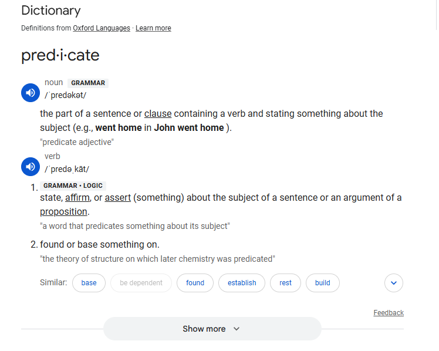
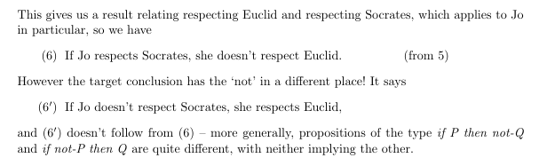

🗓️ Week 04
Informal to Formal Logic
PHIL104Q – Logical validity, props and forms, connectives
Sep 02 2026
Logical Validity
- logically valid arguments are deductively valid
- but not all deductively valid arguments are logically valid
- Vocabulary such as: ‘all’ and ‘some’, ‘and’ and ‘or’ and ‘if’, that does not refer to specific things, properties or relations, are topic-neutral
- An inference step is logically valid iff it is deductively valid
- given how the topic-neutral notions occur in the premisses and conclusion
- and some premisses logically entail a certain conclusion if the inference form premisses to conclusion is logically valid.
- A proposition is logically necessary iff it is necessarily true, in virtue of how topic-neutral notions feature in it.
- We only need to concern ourselves with validity which depends on uncontroversially topic-neutral vocabulary: ‘all’, ‘some’, ‘and’ and ‘or’ etc.
- We will accept that our given definitions of validity lead to strange arguments
We will accept that our given definitions of validity lead to strange arguments
Jack is married. Jack is not married. So th eworld will end tomorrow!
The above is logically valid given our definition in 2.1:
An inference step is valid iff there is no possible situation in which its premises would be true and its conclusion false.
- Deductive Validity: An inference step is valid iff there is no possible situation in which its premises would be true and its conclusion false.
- Logical Validity: Arguments whose load-bearing principles of inference can be laid out using only topic-neutral notions.
- Logical Validity: Patterns of reasoning that can be used when talking about any subject matter at all.
- Logical Validity: Universally applicable patterns of reasoning
Therefore:
- An inference step is logically valid if and only if it is deductively valid in virtue of the way that topic-neutral notions occur in the premisses and conclusion.
Topic Neutral Terminology
Vocabulary like ‘all’ and ‘some’ and ‘or’, ‘not’ and ‘if’ etc.
- does not refer to specific things, properties or relations,
- useful for discussing any topic (topic neutral)
Deductively Valid:
- Jill is a mother
- So, Jill is a parent
Logically Valid:
- Anything that is a mother is a parent
- Jill is a mother
- So, Jill is a parent
Consider:
- Any m is a p
- [Jill] is a m
- So, [Jill] is a p
- Any m is a p
- Bob is a mother
- So Bob is a parent
- Jack is a bachelor
- So Jack is unmarried
How can we show that an unobviously valid inference is logically valid? By a suitable proof, of course – meaning a proof where the pattern of inference used at each step can be displayed using a purely logical schema.
Logically Valid:
- Anything that is a mother is a parent
- Jill is a mother
- So, Jill is a parent
Consider:
- Any m is a p
- [Jill] is a m
- So, [Jill] is a p
- Any m is a p
- Bob is a m
- So Bob is a p
- Jack is a bachelor
- So Jack is unmarried
Proof:
- A bachelor is an unmarried male
- Jack is a bachelor
- So Jack is a male (from 2)
- So Jack is unmarried (from 1, 2, 3)
- A b is a (u and m)
- Jack is a b
- So Jack is a (u and m)
Exercises
- Only [logicians] are [wise]. (premiss)
- Some [philosophers] are not [logicians]. (premiss)
- All [who love Aristotle] are [wise]. (premiss)
- All [who love Aristotle] are [logicians]. (from 1, 3)
- Some [philosophers] do not [love Aristotle]. (from 2, 5)
- Some of those [who don’t love Aristotle] are [philosophers]. (from 6)
- Only l’s are w. (premiss)
- Some p’s are not l’s. (premiss)
- All who A are w. (premiss)
- If w then l (from 1)
- All who A are l’s. (from 1, 3)
- Some p’s are not A. (from 2, 4)
- Some who are not A are p’s. (from 5)
- The Battle of Hastings happened before the Battle of Waterloo.
- The Battle of Marathon happened before the Battle of Hastings.
- Hence the Battle of Marathon happened before the Battle of Waterloo.
- The H before the W.
- The M before the H.
- The M before the W.
- Jane is no taller than Jill.
- Jill is no taller than Jo.
- Jo is no taller than Jane.
- So Jane, Jill and Jo are the same height.
- Jane is taller than Jill.
- Jill is taller than Jo
- Jo is taller than Jane.
- So Jane, Jill and Jo are the same height.
- J is [more t than] I.
- I is [more t than] O.
- O is [more t than] J.
- J is [more t than] O. (from 1, 2)
- J is [more t than] J. (say what?! That’s insane!)
- But is it though?
- Depends on what [more t than] means.
- So not deductively valid and therefore not logically valid.
Why?
‘is [more t than]’ is a predicate:

Predicate
Is ‘is’ a predicate?
John ‘is’ tall.
- Someone loves Alex.
- But Alex loves no-one.
- The person who loves Dr Jones, if anyone does, is Dr Jones.
- So Alex isn’t Dr Jones.
- Someone l’s A.
- But A l’s n.
- The p who l’s D, if anyone does, is D.
- If anyone l’s D, then D l’s D. (from 3)
- If any x l’s D, then D l’s D. (from 4)
- A does not l any x (from 2)
- A does not l D.
- A is not D (4, 6)
- Whoever respects Socrates respects Plato too.
- All who respect Euclid respect Aristotle.
- No one who respects Plato respects Aristotle.
- Therefore Jo respects Euclid if she doesn’t respect Socrates.
- Whoever respects Socrates respects Plato too.
- All who respect Euclid respect Aristotle.
- No one who respects Plato respects Aristotle.
- All respects S respects P too.
- All who respect E respect A.
- No one who respects P respects A.
- All S’s are P’s.
- All E’s are A’s.
- No P’s are A’s.
- No S’s are A’s. (from 1 and 3)
- No S’s are E’s (from 2, and 4)
- Therefore, if S than not E (from 5)
But look at the original conclusion:
- Whoever respects Socrates respects Plato too.
- All who respect Euclid respect Aristotle.
- No one who respects Plato respects Aristotle.
- Therefore Jo respects Euclid if she doesn’t respect Socrates.
In other words:
- All S’s are P’s.
- All E’s are A’s.
- No P’s are A’s.
- No S’s are A’s. (from 1 and 3)
- No S’s are E’s (from 2, and 4)
- Therefore, E if not S
- (Or rather) If not S then E (from 6)
- (not this) If S than not E
- Whoever respects Socrates respects Plato too.
- All who respect Euclid respect Aristotle.
- No one who respects Plato respects Aristotle.
- No one who respects Socrates respects A
- No one who respects Socrates respects Euclid
- Therefore, Jo respects Euclid if she doesn’t respect Socrates.
- (Or rather) Therefore, If Jo does not respect Socrates, then she respects Euclid.

- Jill is a good logician only if she admires either Gödel or Gentzen.
- Jill admires Gödel only if she understands his incompleteness theorem.
- Whoever admires Gentzen must understand his proof of the consistency of arithmetic.
- No one can understand Gentzen’s proof of the consistency of arithmetic without also understanding Gödel’s incompleteness theorem.
- So if Jill is a good logician, then she understands Gödel’s incompleteness theorem.
- Jill is a good logician only if she admires either Gödel or Gentzen.
- Jill admires Gödel only if she understands his incompleteness theorem.
- Whoever admires Gentzen must understand his proof of the consistency of arithmetic.
- No one can understand Gentzen’s proof of the consistency of arithmetic without also understanding Gödel’s incompleteness theorem.
- [Jill is a good logician] only if [either (Jill admires Gödel) or (Jill admires Gentzen).]
- [L] only if [either (O or E)]
- Therefore, if L then either (O or E).
- If L then either (O or E).
- Jill admires Gödel only if she understands his incompleteness theorem.
- Jill admires Gödel only if she understands his incompleteness theorem.
- [Jill admires Gödel] only if [she understands his incompleteness theorem.]
- O only if I
- If O then I
- If L then either (O or E).
- If O then I.
- [Jill is a good logician] only if [she admires either Gödel or Gentzen.]
- [Jill admires Gödel] only if [she understands his incompleteness theorem.]
- Whoever [admires Gentzen] must [understand his proof of the consistency of arithmetic.]
- No one can [understand Gentzen’s proof of the consistency of arithmetic] without also [understanding Gödel’s incompleteness theorem.]
- Whoever [admires Gentzen] must [understand his proof of the consistency of arithmetic.]
- If E then P
- If L then either (O or E).
- If O then I.
- If E then P
- No one can [understand Gentzen’s proof of the consistency of arithmetic] without also [understanding Gödel’s incompleteness theorem.]
- No one can [understand Gentzen’s proof of the consistency of arithmetic] without also [understanding Gödel’s incompleteness theorem.]
- No one can P and not I
- If P then I
- If L then either (O or E).
- If O then I.
- If E then P
- If P then I
Looking at the conclusion:
- So if Jill is a good logician, then she understands Gödel’s incompleteness theorem.
- If Jill L’s then Jill I’s.
- If L then I.
Recreating the argument:
- If L then either (O or E).
- If O then I.
- If E then P
- If P then I
- If L then I
Creating Our Proof:
- If L then either (O or E). (Premise)
- If O then I. (Premise)
- If E then P. (Premise)
- If P then I. (Premise)
- If E then I. (from 3 and 4)
- If L then (I or I). (from 1, 2, and 5)
- Therefore, if L then I. (from 6)
- All the Brontë sisters supported one another.
- The Brontë sisters were Anne, Charlotte and Emily.
- Hence Anne, Charlotte and Emily supported one another.
- There are exactly two logicians at the party.
- There is just one literary theorist at the party.
- No logician is a literary theorist.
- Therefore, of the party-goers, there are exactly three who are either logicians or literary theorists.
- There are exactly two [logicians at the party.]
- There is just one [literary theorist at the party.]
- No [logician] is [a literary theorist.]
- Therefore, of the party-goers, there are exactly three (who are either) [logicians or literary theorists.]
- There are 2 P’s.
- There is 1 T’s.
- P is not T.
- Therefore P and P and T
Connectives
- Either Jill is in the library or she is in the coffee bar.
- Jill isn’t in the library.
- Therefore, Jill is in the coffee bar.
- Either [Jill is in the library] or [Jill is in the coffee bar.]
- It is not the case that [Jill isn’t in the library.]
- Therefore, [Jill is in the coffee bar.]
- Either (L or C)
- Not L
- So C
It is easier:
- L or C
- Not L
- So, C
- L \(\lor\) C
- \(\neg\) L
- C
- It’s not the case that [Jack (played lots of football) and (also did well in his exams.)]
- [Jack played lots of football.]
- So [Jack did not do well in his exams.]
- \(\neg\) (F and E)
- F
- \(\neg\) E
- \(\neg\) (F \(\land\) E) (Premise)
- F (Premise)
- F \(\lor\) E (from 1)
- \(\neg\) E (From 2, and 3)

PHIL104Q – Informal to Formal Logic